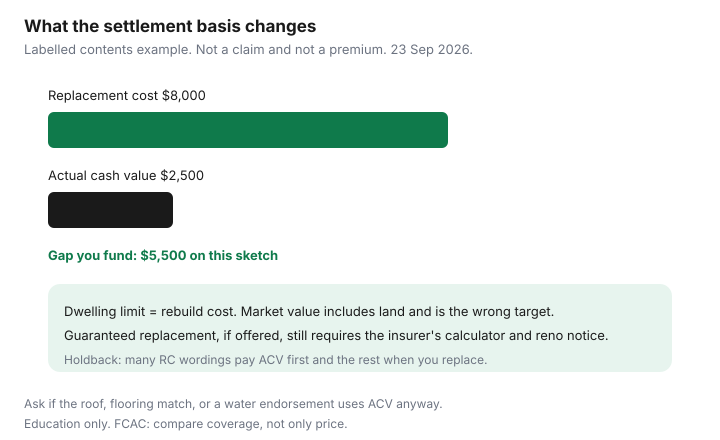

Insurance · Canada
Replacement Cost vs Actual Cash Value in Canada: Stop Under-Insuring Your Home and Contents
After a fire or a sewer loss, the cheque follows the settlement basis on the policy, not the receipt you wish you had. Actual cash value pays replacement cost minus depreciation. Replacement cost pays to replace with similar kind and quality, subject to the limit, often with a rule that you must actually replace before the full amount is released. Guaranteed or enhanced replacement cost, where an insurer offers it, can pay above the dwelling limit if you met their conditions. Households insure the MLS price, or leave contents on actual cash value, and then call the settlement a dispute. It was the contract.
This page is that contract, for houses, condos, and tenants. Shopping the premium, raising the deductible, and condo-corporation assessments are other guides. Do not drop a water endorsement to “afford” replacement cost. Buy the settlement basis you can live with after a total loss.
Disclosure: Home-insurance quote flows and broker quote portals are offer types. Saving Optimizer may earn a commission if we later add partner links. We do not currently claim insurer partnerships. We do not sell policies. Education only. Labelled dollars are a method, not a quote. IBC and Canada.ca pages used 23 Sep 2026.
Key takeaways
- Actual cash value depreciates. Replacement cost does not, up to the limit, and often only once you replace.
- The dwelling limit should be a rebuild number. Market value includes land and is the wrong target.
- Contents left on actual cash value surprise people when a ten-year-old sofa or laptop settles for a fraction of a new one.
- Some wordings move roofs, flooring, or water losses onto actual cash value even when the rest of the policy says replacement cost. Read those clauses.
- Inflation guard is not a renovation. Tell the insurer when you finish space or add square footage.
- Pay for a replacement-cost basis when the depreciated cheque would be a debt you do not want. The premium difference is the price of that choice.
Define ACV depreciation vs replacement cost / guaranteed replacement options
Three phrases get mixed up on Canadian declarations. Ask which one is printed, for the building and again for contents.
| Basis | What a total loss tends to pay | Household test |
|---|---|---|
| Actual cash value (ACV) | Cost to replace, minus depreciation for age and wear. Sometimes the market value of the used item. | You can fund the gap between depreciated value and a new item from savings. If you cannot, ACV is a loan you have not priced. |
| Replacement cost (RC) | Cost of similar kind and quality, new, without deducting depreciation, up to the limit. Many wordings pay ACV first and the balance when you replace (a holdback). | You will rebuild or re-buy. You can carry the holdback for the weeks the insurer waits for receipts. |
| Guaranteed or enhanced replacement | May pay above the stated dwelling limit if you insured to the insurer’s calculator, reported renovations on their deadline, and rebuild on the terms in the form (often the same site). | You will cooperate with the calculator and you will not quietly add a storey. If you understate area, the guarantee can be lost and you are back to the limit. |
Bylaw or code-upgrade coverage is a fourth line. Rebuilding to today’s code can cost more than replacing what stood there. Ask if ordinance coverage is included or optional. It is not the same clause as replacement cost.

Building limit: rebuild cost is not market value—run a replacement worksheet
FCAC’s get-insurance guidance and every serious Canadian home worksheet say the same thing in different words: insure the building for what it costs to reconstruct, not for what a buyer would pay for the land. A $900,000 house in a city can sit on $600,000 of land and $300,000 of building, or the reverse in a high-build-cost market with a cheap lot. Using the listing price can over-insure or under-insure. Neither is a strategy.
Run a worksheet once a year and after any renovation:
- Square footage of finished living area, including a finished basement if you would rebuild it as finished. Unfinished basement area if the insurer’s calculator asks for it separately.
- Storeys, garage, exterior (brick, siding), roof material, kitchen and bath grade. “Builder grade” versus a renovated kitchen changes the number.
- Your municipality’s building-cost reality. Ask the insurer for their calculator output and, if the number looks low, ask a local builder what a rebuild would cost per square foot this year. Write both numbers down.
- Debris removal and soft costs if the form does not include them inside the dwelling limit.
- Set the limit at the rebuild number, not the mortgage and not the assessment. The assessment is a tax value.
The shopping version of this worksheet, including water endorsements you should not strip out to hit a price, is shop home insurance without gutting cover. Condo unit owners insure improvements and betterments the corporation does not, not the whole building. The master policy is the corporation’s. Unit-owner limits and loss assessments are the condo deductible guide.
Contents: ACV settlements on older furniture and tech surprise claimants
Contents are where ACV feels abstract until the list is real. A labelled sketch: replacing the household’s main floor and basement furnishings, electronics, and clothing would cost $80,000 new. On an ACV basis the insurer’s depreciation might settle the same list at $25,000. The $55,000 gap is what you pay, or do without, if you never bought replacement-cost contents. Those two figures are a teaching sketch, not an industry average. Your inventory is the only list that matters.
A smaller version of the same shock: a laptop and a sofa with a new price of $8,000 and a depreciated settlement of $2,500. The chart on this page is that pair. Replacement cost, if the wording requires you to replace first, means you may front the $8,000, receive $2,500 quickly, and receive the rest when you submit receipts. People on a tight month experience that holdback as a “denial.” It is often the contract working as written. Ask, before a loss, whether your contents basis is ACV or replacement cost and whether a holdback applies.
Sub-limits still cap jewellery, bikes, cash, and business property even on a replacement-cost policy. Schedule the items that exceed them. Tenants: the contents limit is the policy. The landlord’s insurance does not replace your furniture. The tenant guide covers liability and a contents inventory; this page is the settlement basis on that inventory.
Roof, flooring, and water-claim ACV traps on some wordings
A declarations banner that says “replacement cost” can still send pieces of the loss to ACV. The clauses are in the wording, not in a statute, so the age and the percentage differ by insurer. Ask these questions and write the answers on the renewal:
- Roof surface. Some forms pay ACV on roofs older than an age stated in the form, or only pay replacement cost if the roof was installed within a stated number of years. Ask the age on your form and the age of your roof. A wind or hail claim is the usual moment this appears.
- Flooring. Matching of undamaged rooms may be limited. You may be paid for the wet room, not for making the whole floor one colour. Ask about matching limits before you assume a seamless repair.
- Water losses. Sewer backup and overland endorsements sometimes settle at ACV, or carry their own limit, even when fire is replacement cost. Read the endorsement, not the fire section. The peril map is the water-damage guide and the overland guide.
- The thing that failed. IBC notes the appliance that caused a sudden water leak is often not covered, even when the resulting damage is. Budget the washer separately.
If the answer is “roofs over X years are ACV,” either budget a roof before that birthday or accept a depreciated cheque. Do not discover X in the claims letter.
Inflation guard and renovation updates so limits keep pace
Many policies include an inflation adjustment that nudges the dwelling limit at renewal. It tracks a construction index the insurer chose. It does not know that you added a bathroom, finished the basement, or replaced a kitchen with something far above builder grade. Those are material changes. Report them when they happen, not at claim time.
A practical cadence:
- At each renewal, compare the dwelling limit with last year’s rebuild worksheet plus any local cost jump you have heard from a builder or from the insurer’s own calculator.
- If you renovated, send photos and a one-paragraph description before the renewal date. Ask for the new limit and the new premium in writing. Ask whether guaranteed replacement, if you had it, still applies.
- If you added a rental suite, ask the occupancy question in the same email. A quiet suite can void assumptions in the policy. That is a coverage problem, not a discount.
- Contents limits often sit as a percentage of the dwelling or as a flat amount. A percentage does not help a tenant, and it does not help an owner whose contents grew faster than the building. Re-add the inventory.
Put the worksheet on the 45-day review. Inflation guard is a helper. It is not the review.
Decision matrix: when paying for RC riders is cheaper than a bad claim
You are choosing a claim-day cheque, not a personality. Get the premium difference in writing for the same limits and deductibles, then apply this matrix.
| Situation | Lean toward |
|---|---|
| You would rebuild the house, and savings cannot fund a depreciated shortfall plus the deductible | Replacement cost on the dwelling, at a rebuild limit. Ask about guaranteed replacement only if you will meet the calculator and notice rules. |
| Contents are newer, or you cannot re-buy them from cash | Replacement-cost contents. Price the difference against the labelled gap, not against a slogan. |
| Contents are old, you would not replace them new, and the premium difference is large | ACV can be rational. Write that choice down so a later claim is not a surprise. |
| Roof is past the form’s replacement-cost age | Budget the roof, or accept ACV on that surface. Do not pay for a dwelling RC story that excludes the roof you will actually claim. |
| The only way to afford RC is to delete sewer or overland, or to raise a deductible you cannot cash-flow | Do not make that trade. A replacement-cost fire policy that excludes the water loss you are likely to have is the expensive design. See the deductible guide before you move that number. |
Quote the RC and ACV versions on one broker market and one direct writer so the price gap is real. Loyalty pricing that hides a move from RC to ACV is a coverage cut. The switching guide shows how to compare the contracts rather than the stickers.
Sources & date stamps
- Financial Consumer Agency of Canada, Get insurance — compare what is covered, not only the price (used 23 Sep 2026).
- Insurance Bureau of Canada, types of home coverage and flood-and-water pages — optional water endorsements; appliance that failed is often not covered; insurance is not a maintenance contract (used 23 Sep 2026).
- Saving Optimizer home-shopping guide — rebuild cost versus market value, used as the worksheet this page does not repeat in full.
Frequently asked questions
What is the difference between replacement cost and actual cash value?
Actual cash value pays replacement cost minus depreciation. Replacement cost pays to replace with similar kind and quality, up to the limit, and many wordings pay the balance only after you replace. Guaranteed replacement, where offered, can go above the dwelling limit if you met the insurer's conditions.
Should the dwelling limit equal the sale price?
No. Sale price includes land. The limit should be the cost to rebuild. An assessment is a tax value, not a rebuild number. Ask for the insurer's calculator and compare it with a local build cost.
Why do contents claims feel low?
Older furniture and electronics on an actual-cash-value basis settle for a fraction of a new item. A labelled sketch on this page is $8,000 new versus $2,500 depreciated. Your inventory is the list that matters.
Can a replacement-cost policy still depreciate the roof?
Some wordings move roofs past a stated age, flooring matches, or water endorsements onto actual cash value. The age is on the form, not in a national rule. Ask before a storm.
Is this insurance advice?
No. Education only. Quote flows are an offer type. We do not claim an insurer partnership.